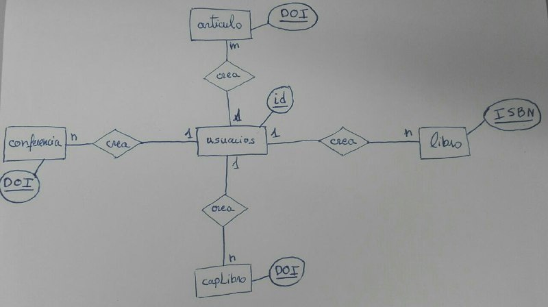

GIRARV por sus siglas, Grupo de Investigación de Realidad Aumentada y Realidad Virtual, es una página web de investigación para la asignatura Tecnologías Web, con una estructura básica.
Página de InicioEn la página principal tenemos una breve introducción sobre lo que es GIRARV y qué es la Realidad Aumentada y Realidad Virtual Podemos acceder desde la columna de la izquierda a ver los miembros, publicaciones y proyectos que haya hasta el momento. En el header podemos iniciar sesión y en el footer podemos encontrar distintas páginas de información.
Miembros, proyectos y publicacionesEstas páginas son meramente informativas, donde podemos ver los distintos miembros que hay registrados en la página, además de los proyectos y publicaciones que se hayan escrito. Hay implementado en PHP un buscador, que te ordena los tipos de publicaciones que hay por autor, fecha o palabras clave
Inicio de sesión como usuario
Iniciando sesión como usuario tendremos una nueva funcionalidad en la columna de la izquierda:
La base de datos está dividida en dos zonas, una donde se guardan los usuarios, y otra donde se almacenan las distintas publicaciones (artículos, libros, capítulos de libros y conferencias).
La página tiene una maquetación simple que se divide en:
El header, la columna izquierda y footer son comunes en todas las páginas y nunca cambian, salvo en el inicio de sesión como usuario o administrador, donde en la columna de la izquierda se añaden nueva funcionalidades.
La columna derecha va cambiando dependiendo de la página que nos encontremos y sigue una estructura de división con más div dependiendo de la página que sea.
Tecnología JavascriptSe ha implementado un pequeño script para que antes de hacer una petición al servidor se compruebe que todos los datos están correctamente completados. Si hay un campo sin rellenar te marcan los que están vacíos cambiando el color de la casilla a color rojo. También hay un caso especial al añadir proyectos, que si pones la fecha de comienzo después de la fecha de finte salta un aviso y marca las casillas de las fechas en amarillo
Diseño adaptablePara el diseño adaptable hemos decidido adaptarlo para dispositivos de 1024px de ancho hasta teléfonos móviles de 480px de ancho con 1 solo diseño responsivo. Para lograr esto, la parte más ancha que es la columna derecha, la hemos puesto debajo de la columna de la izquierda para que se pueda adaptar a distintas pantallas. Hemos eliminado las imágenes que hay en la página para ahorrar espacio tanto visual como de memoria, también en las páginas informativas hemos juntado el texto para que se pueda leer bien.
Tecnología AJAXSe ha implementado dos pequeños scripts con AJAX en la documentación. Cuando se da click en el enlace de documentación, aparece encima del header esta documentación, que está escrita en una página HTML. En el botón "Ocultar Documentación" al darle se oculta la documentación si está mostrada
Otros elementosSe han puesto otros elementos en la página web: